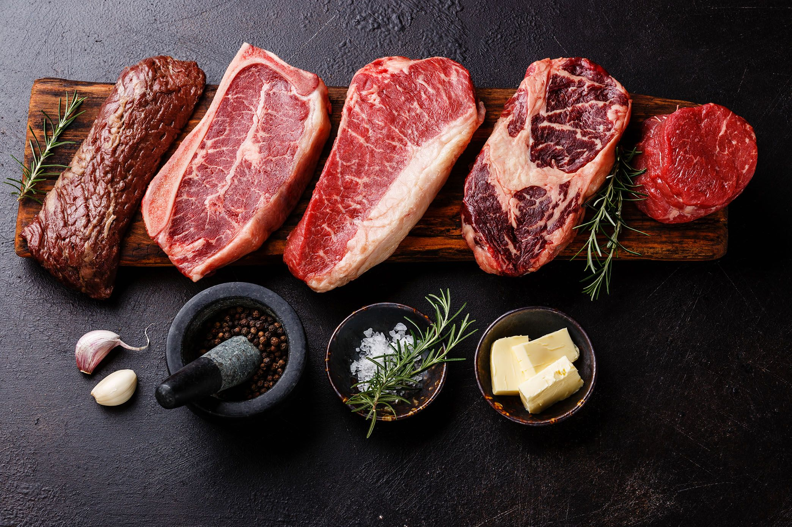

Премиальный стейк
 4.5
4.5
От 40 рублей

Ингредиенты
Стейк Праймбиф
Оливковое масло
Смесь перцев
Соль
Базилик / розмарин / тимьян
Оливковое масло
Смесь перцев
Соль
Базилик / розмарин / тимьян
800 г.
3 ст.л.
по вкусу
по вкусу
по вкусу
3 ст.л.
по вкусу
по вкусу
по вкусу

Способ приготовления
Стейк стриплойн вытираем насухо бумажным полотенцем и оставляем его на столе для насыщения кислородом. Даем мясу немного согреться при комнатной температуре. Это необходимо для равномерной прожарки.
Натираем мясо смесью перцев и солью, оливковым маслом.
Нагреваем сковороду до 200 градусов.
Кладем кусок на разогретую поверхность, прижимаем лопаткой.
Обжариваем стейк на каждой стороне по 2,5 минуты, постоянно переворачивая.
Ароматные травы добавляем в конце обжарки.
Переворачиваем 4 раза — при толщине куска не более 3 см, времени будет достаточно, чтобы получить идеальную степень готовности Medium.
Снимаем мясо со сковороды, даем ему «отдохнуть».